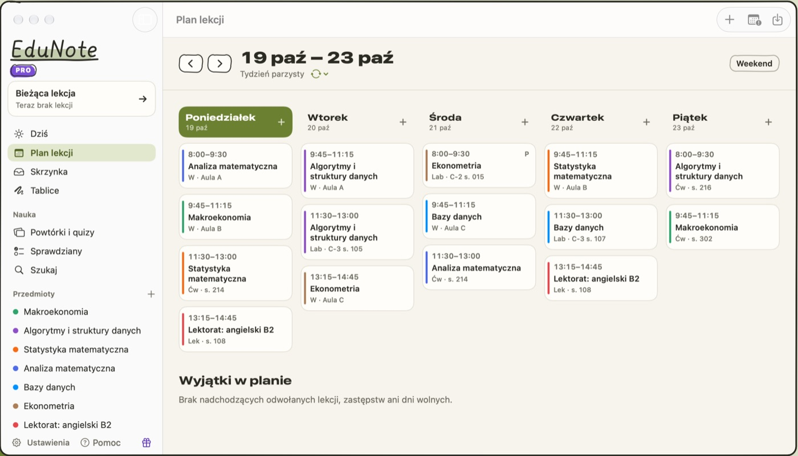
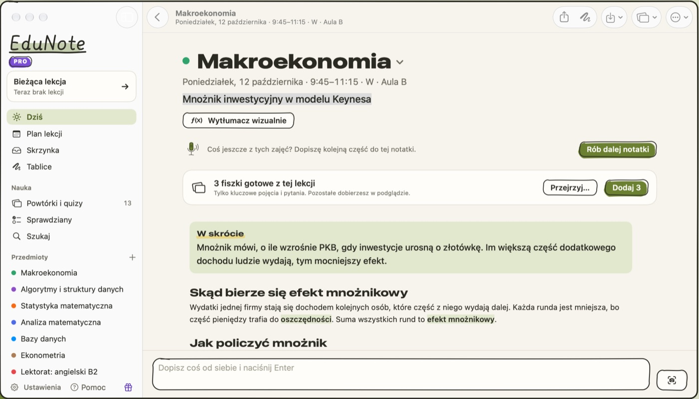
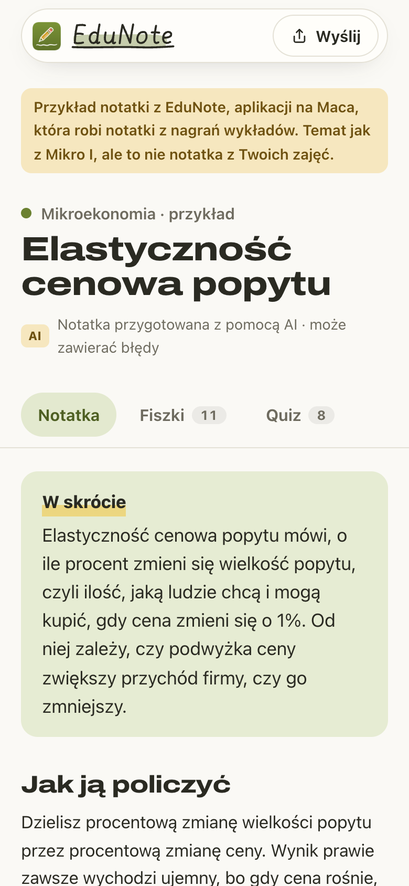
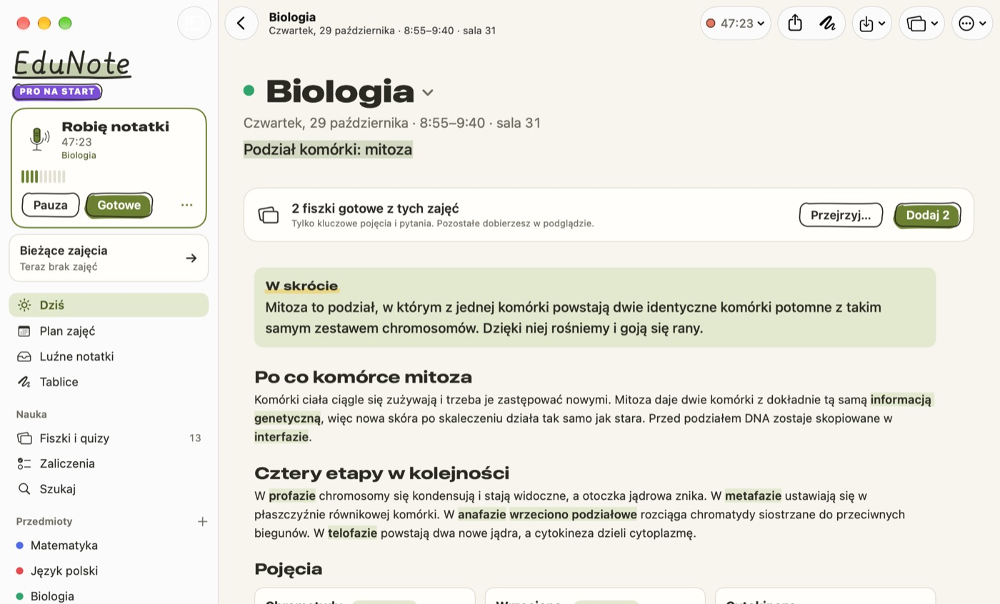
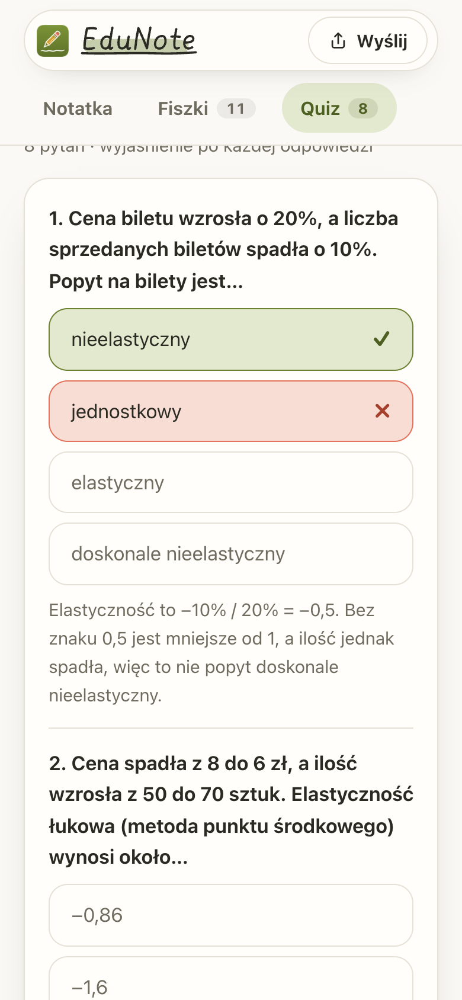
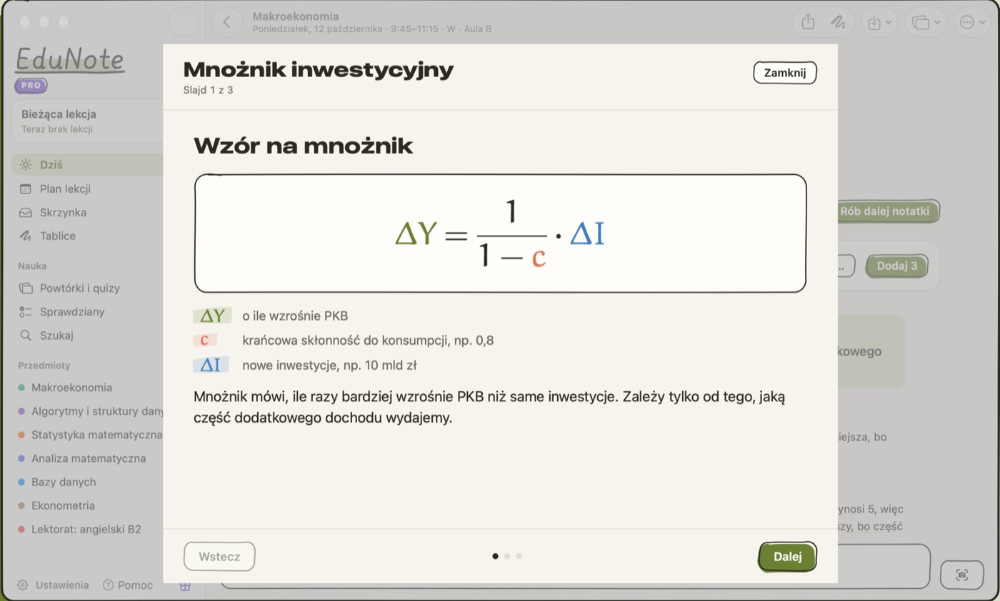
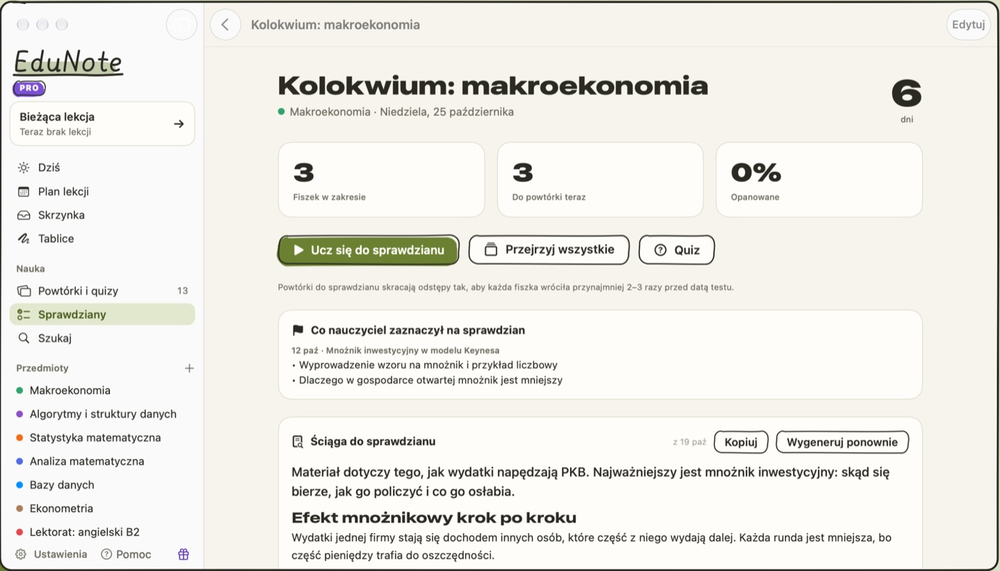

Plan zajęć w minutę
Wczytujesz plan ze zdjęcia, zrzutu ekranu albo PDF z USOS. Każda notatka sama trafia do właściwych zajęć.

Nagrywasz wykład na Macu.
Cały rok dostaje notatki i fiszki.
Na Maca z macOS 15 · notatki otwierają się na każdym telefonie



Dla całego roku
Wrzucasz link na grupę roku. Każdy otwiera notatkę, fiszki i quiz w przeglądarce: bez konta, bez instalowania i bez Maca.

Wczytujesz plan ze zdjęcia, zrzutu ekranu albo PDF z USOS. Każda notatka sama trafia do właściwych zajęć.

Wzór z wykładu dostajesz rozpisany: co znaczy każdy symbol i przykład krok po kroku. Notatkę wysyłasz rokowi jednym linkiem.

Streszczenie całego materiału i powtórki rozłożone do dnia kolokwium.

Notatki od kogoś z roku czytasz i powtarzasz za darmo, w każdej przeglądarce. Aplikacja na Maca:
Tak, za zgodą prowadzącego i zgodnie z zasadami uczelni. Nagranie zostaje na Twoim Macu, a do AI trafia sam tekst.
Zwykle tak, ale o zakresie na przedmiocie decyduje prowadzący. Na Uniwersytecie Łódzkim zarządzenie rektora nr 73/2026 (PDF) wprost dopuszcza AI do streszczeń i nauki do egzaminów; zasady dla przedmiotu są w sylabusie.
Uczyć się z notatek, które wyśle Ci ktoś z roku: notatka, fiszki i quiz działają w każdej przeglądarce. Wystarczy jedna osoba z Makiem na roku. Jeśli chcesz EduNote na Windowsa albo Androida, daj znać.
Osoby, które dostają link, nigdy nie płacą. Teraz nie płaci też osoba nagrywająca, bo aplikacja jest za darmo. Po wczesnym dostępie darmowy plan daje 3 notatki AI w tygodniu, więc przy nagrywaniu wszystkich wykładów zwykle potrzebny będzie EduNote Pro (24,99 zł miesięcznie).
Tak, jeśli Mac dobrze słyszy prowadzącego, więc lepiej usiąść bliżej i nie zasłaniać mikrofonu. Przed nauką warto zerknąć, czy liczby i nazwy własne się zgadzają.
Notatkę, pojęcia, fiszki i quiz. Nigdy nagranie ani transkrypcję, a nazwisko prowadzącego z planu zajęć zamieniamy na inicjały. Link działa do końca sesji poprawkowej: notatki z semestru zimowego do 15 marca, z letniego do 30 września.
Zgłoś ją przez formularz. Każde zgłoszenie czyta człowiek, zwykle w ciągu 48 godzin.